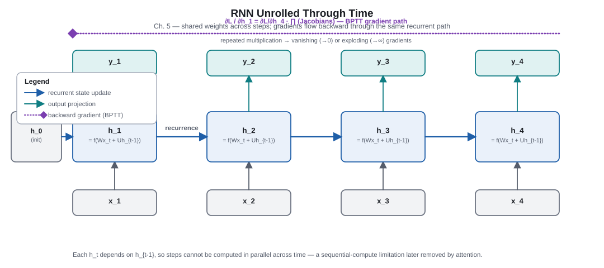
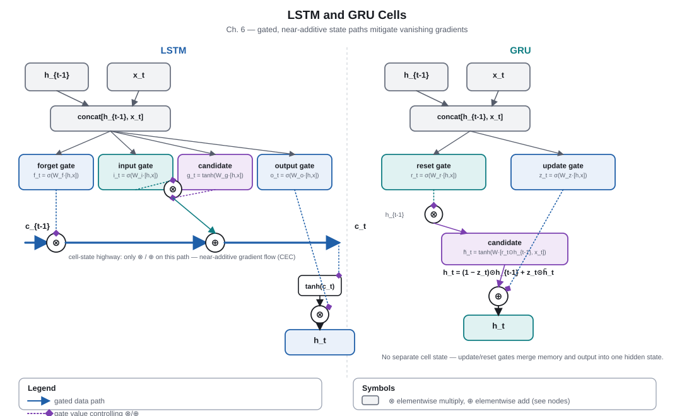
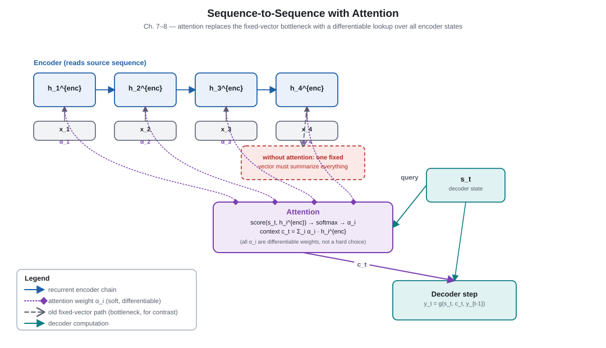
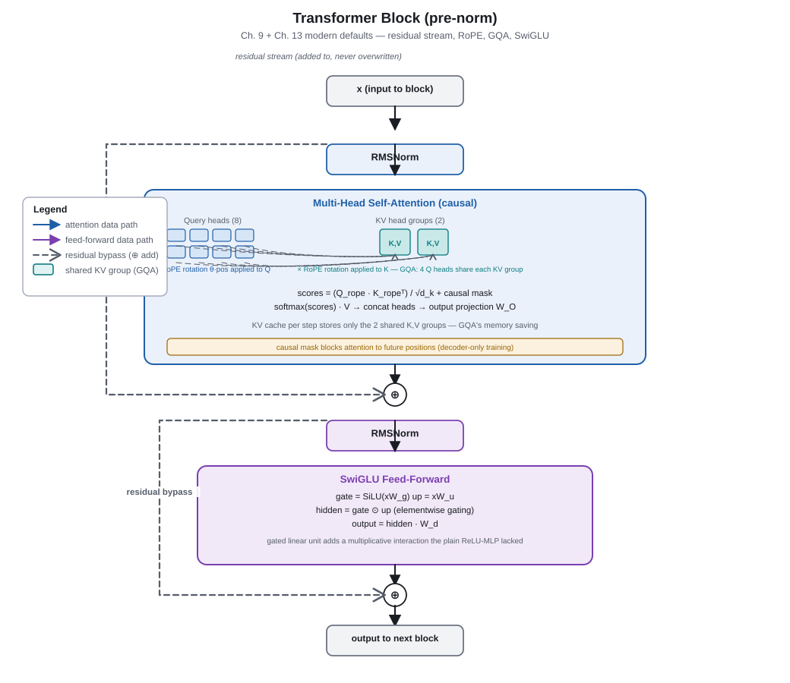

Part 2 of 6
Sequence models: state, routing, and parallelism
The core tension here is access to distant context. Recurrence makes history available through a state, gates protect that state, attention exposes individual past states, and the Transformer makes those interactions parallel during training.
Recurrent era · 1990s–
Chapter 5. Recurrent Neural Networks
Why this mattered
RNNs replaced a fixed context window with a recurrent hidden state that can, in principle, summarize an arbitrarily long prefix. The same transition function is reused at every position, giving sequence models a compact parameterization. However, gradients must traverse repeated transformations and time steps cannot be processed independently, creating optimization and throughput limits. PDF p. 13.
Key takeaways
- An RNN updates
htfrom the current input and previous state. - Backpropagation through time (BPTT) unrolls the recurrence for learning.
- Repeated Jacobian products can shrink gradients to zero or make them explode.
- Sequential state updates block full time-axis parallelism during training and inference.
Core explanation
A simple RNN computes ht = f(Whht−1 + Wxxt + b), then predicts from ht. Its state is a learned summary, not a literal record of previous tokens. That compression is useful for variable-length input but means every new detail competes for space in the same vector.

During BPTT, an early state influences later loss through a product of derivatives. If typical singular values are below one, signals fade; above one, they may grow uncontrollably. Gradient clipping can contain explosions, but it cannot make a weak signal from a far-away token informative again.
Going deeper: the gradient path
The influence of an early state on a later loss includes terms like ∂ht/∂ht−1 · … · ∂hk/∂hk−1. Nonlinearities and recurrent weights appear in every factor. This is why the issue is structural rather than simply a matter of training longer.
Checkpoint
- What lets an RNN accept variable-length input?
Reveal answer
It applies the same state-update function repeatedly, carrying a hidden state forward. - Why do long dependencies challenge BPTT?
Reveal answer
Learning signals pass through many Jacobian products, which can vanish or explode. - Can all RNN time steps be computed simultaneously?
Reveal answer
No; each state needs the preceding state.
Gated recurrence · 1997–2014
Chapter 6. LSTM and GRU
Why this mattered
LSTMs and GRUs gave recurrent models a controlled, near-additive path through time. Gates decide what to retain, write, expose, or reset, so a model can preserve information without repeatedly transforming it. They improved practical long-dependency learning but retained serial recurrence and a bounded state. PDF p. 14.
Key takeaways
- The LSTM cell state provides a path designed to preserve gradient flow.
- Forget, input, and output gates control memory updates and exposure.
- A GRU combines some gates and removes the separate cell-state/output distinction.
- Gating helps retention; it does not provide random access to every earlier token.
Core explanation
An LSTM updates a cell state by blending retained memory with proposed new content: ct = ft ⊙ ct−1 + it ⊙ gt. When the forget gate stays near one and the input gate near zero, a value can pass forward almost unchanged. The output gate then decides how much of that internal memory becomes the visible hidden state.

| Property | LSTM | GRU |
|---|---|---|
| Persistent state | Cell state plus hidden state | Hidden state |
| Controls | Forget, input, output gates | Update and reset gates |
| Trade-off | More explicit separation of memory and output | Fewer components and parameters |
Going deeper: the constant-error intuition
In the idealized case, the derivative of the new cell state with respect to the old cell state is close to the forget gate. A gate near one can maintain an error signal far more effectively than repeatedly applying an unconstrained nonlinear recurrence. In real models, gates are learned and other paths interact, so this is an intuition rather than a guarantee.
Checkpoint
- Which LSTM path is designed to carry information across steps?
Reveal answer
The cell state, updated by gated addition. - What does a forget gate near one encourage?
Reveal answer
Retention of the previous cell-state value and a stronger gradient path through time. - What limitation do LSTMs and GRUs still share with simple RNNs?
Reveal answer
They process time steps serially and compress the past into a finite state.
Neural translation · 2014
Chapter 7. Sequence-to-Sequence Models
Why this mattered
Sequence-to-sequence learning provided a general recipe for mapping one variable-length sequence to another, notably in machine translation. An encoder converts source tokens into a representation, and a decoder generates a target sequence conditioned on it. The early fixed-vector version revealed an information bottleneck that directly led to attention. PDF pp. 15–16.
Key takeaways
- An encoder produces source representations; a decoder predicts target tokens autoregressively.
- A single final encoder vector becomes a bottleneck for long or detailed input.
- Teacher forcing uses gold previous targets during training.
- Exposure bias is the train–test mismatch when inference must condition on the model’s own earlier outputs.
- Beam search trades computation for a wider set of partial hypotheses.
Core explanation
In the basic encoder–decoder, the encoder reads the source and passes its final state to the decoder. The decoder learns P(y1:U | x1:T) by predicting each target token after prior target tokens. Teacher forcing makes each prediction condition on the correct preceding target during training, which stabilizes learning but means a small inference error can shift later inputs away from the training distribution.

At decoding time, greedy search chooses the locally highest-probability token. Beam search retains several partial continuations, but it can prefer short outputs because multiplying probabilities reduces scores with length. Length normalization and coverage-related adjustments are practical attempts to align search behavior with desired translations.
Going deeper: conditional factorization
Seq2seq models factor a target as ∏uP(yu | y<u, x1:T). The crucial question is how information about x reaches every conditional. A single vector forces all source details through one channel; attention later gives the decoder a direct, step-specific route.
Checkpoint
- What is the fixed-vector bottleneck?
Reveal answer
The entire source sequence must be compressed into one representation passed to the decoder. - Why can teacher forcing produce exposure bias?
Reveal answer
Training uses correct prior targets, while inference uses the model’s possibly erroneous outputs. - What does beam search retain that greedy decoding discards?
Reveal answer
Several competing partial output sequences.
Differentiable routing · 2014–2015
Chapter 8. Attention Mechanisms
Why this mattered
Attention removed the need for a decoder to retrieve every source detail from one vector. At each output step, it scores encoder states, normalizes those scores, and forms a weighted context. This shortens information and gradient paths between relevant source and target positions, converting memory retrieval into differentiable routing. PDF pp. 17–19.
Key takeaways
- Attention produces a weighted combination of values, with weights selected from a query.
- Alignment weights can vary for every decoding step.
- Additive and dot-product scoring are two ways to compare query and key-like representations.
- Query, key, and value are roles in the computation, not necessarily three unrelated data sources.
Core explanation
For decoder state su and encoder states ht, attention first computes compatibility scores eut. A softmax over source positions becomes weights αut, and the context is cu = Σt αutht. The decoder can therefore focus on different source positions while generating different target tokens.
Bahdanau attention used a learned additive score; multiplicative (dot-product) variants compare projected vectors more directly. Both yield a soft selection rather than a hard lookup. The weights can be inspected, but they should not automatically be treated as a complete causal explanation of a model decision.
Going deeper: attention as a graph
Each target position is connected to every source position by a learned, input-dependent edge weight. Unlike recurrent transmission, the distance between a chosen source representation and the current decoder update is one attention operation. That short path helps access, but computing many pairwise scores becomes costly for long sequences.
Checkpoint
- What problem in early seq2seq does attention address?
Reveal answer
It lets the decoder access individual encoder states instead of relying only on one fixed vector. - What does softmax do to attention scores?
Reveal answer
It turns them into nonnegative weights that sum to one across the attended positions. - Which component carries the content mixed after selection?
Reveal answer
The values.
Transformer era · 2017
Chapter 9. The Transformer
Why this mattered
The Transformer made attention the primary sequence-mixing mechanism and removed recurrent dependence during training. Every position can attend to other permitted positions in parallel, while residual connections and normalization make deep stacks trainable. It traded serial computation for all-pairs interaction cost and became the backbone from which modern LLM variants evolved. PDF pp. 20–24.
Key takeaways
- Self-attention derives queries, keys, and values from the same sequence.
- Scaled dot-product attention is
softmax(QKT/√dk)V. - Multi-head attention gives several projected interaction patterns in parallel.
- Residual paths and normalization support optimization through deep layers.
- Position information must be injected because attention alone is order-agnostic.
- Dense attention has quadratic pairwise interaction in sequence length.
Core explanation
A Transformer block alternates token mixing (attention) with per-token nonlinear transformation (an MLP), each wrapped in a residual connection. Attention lets token i construct a content-dependent mixture of token representations at allowed positions. Multiple heads project the same residual stream into different subspaces, then combine their results. An encoder can use bidirectional attention; an autoregressive decoder masks future positions.

| Component | Main role | Sequence-length implication |
|---|---|---|
| QKT scores | Pairwise routing scores | O(T2) interactions |
| Attention × V | Content mixing | Also follows pairwise attention pattern |
| MLP | Per-token feature transformation | O(T) positions at fixed width |
| KV cache at decoding | Reuse prior keys and values | Grows with generated history |
Positional encodings break permutation symmetry. The original paper used fixed sinusoids; later systems use learned or relative mechanisms. Causal masking makes decoder-only training valid: position t may attend to earlier tokens but not the answer token it is asked to predict.
Going deeper: scaling and stability
The factor 1/√dk keeps dot-product score magnitudes from growing too quickly with key dimension, which helps softmax retain useful gradients. In a pre-norm block, normalization occurs before each sublayer, leaving a relatively direct residual route. Norm placement, initialization, and residual scaling are optimization choices with real trade-offs, not a single universally best recipe.
Checkpoint
- What makes self-attention “self” attention?
Reveal answer
Queries, keys, and values are projections of positions in the same sequence. - Why are positional signals necessary?
Reveal answer
Content-based attention alone does not distinguish a sequence from a permutation of its tokens. - What does a causal mask prevent?
Reveal answer
It prevents a prediction position from attending to future tokens during autoregressive training. - What is the dominant dense-attention sequence-length cost?
Reveal answer
Pairwise score interactions grow quadratically with sequence length.